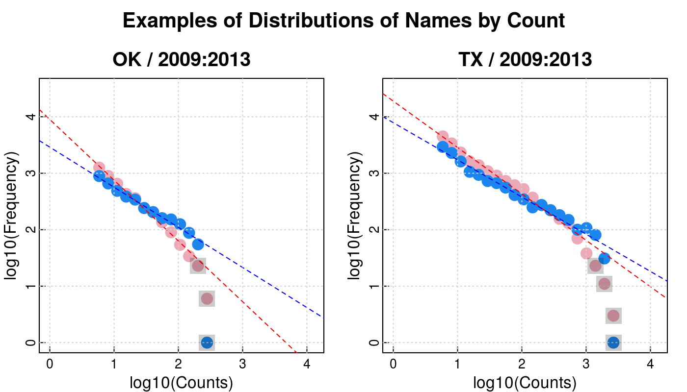
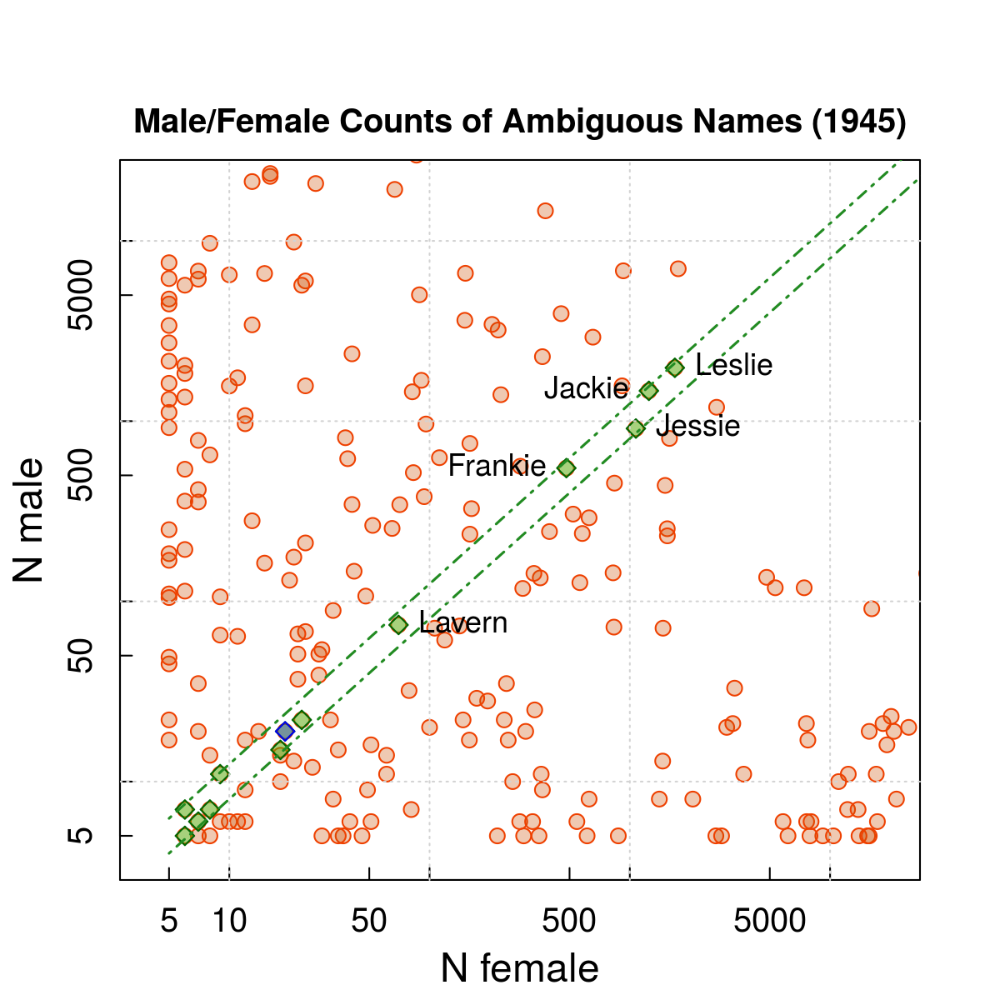
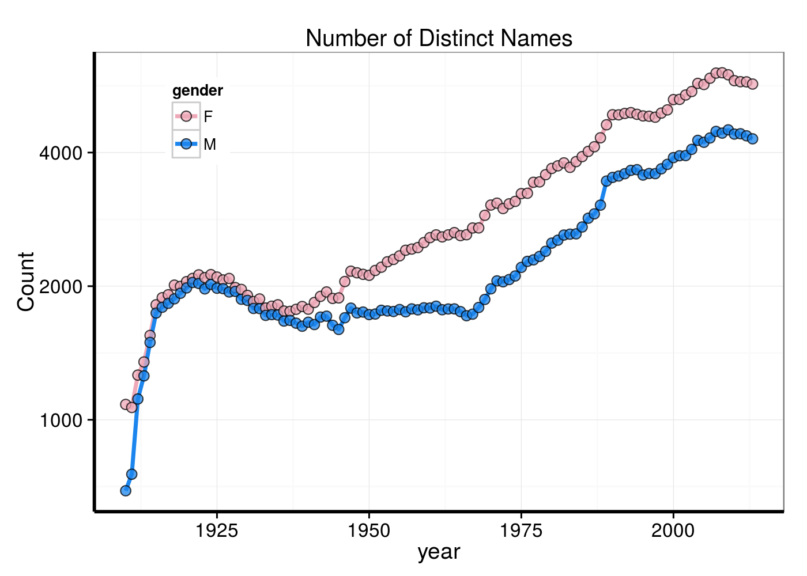
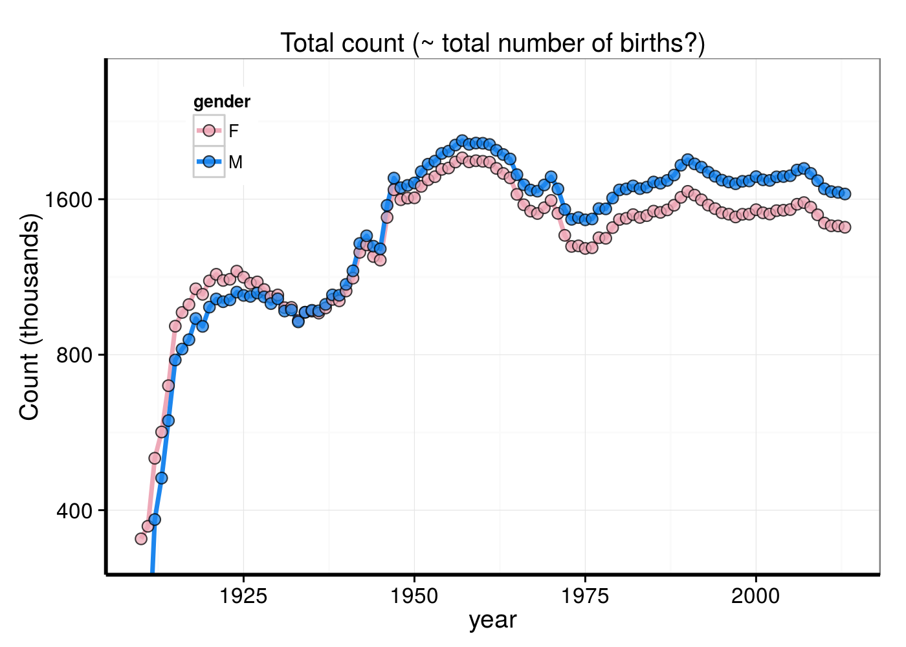
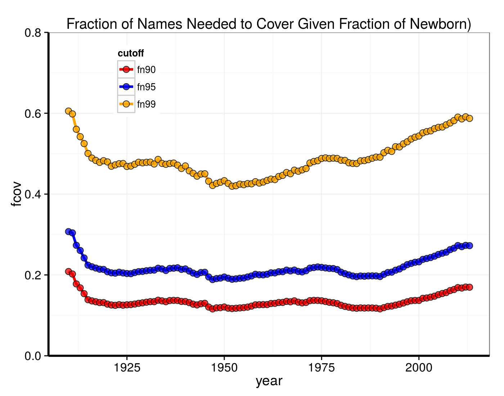
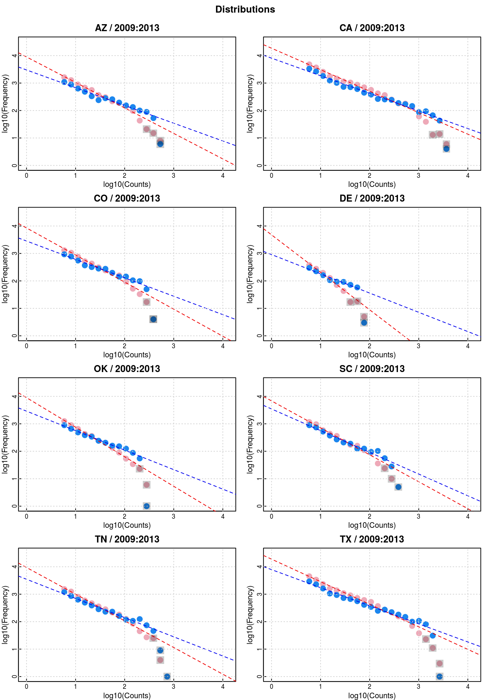
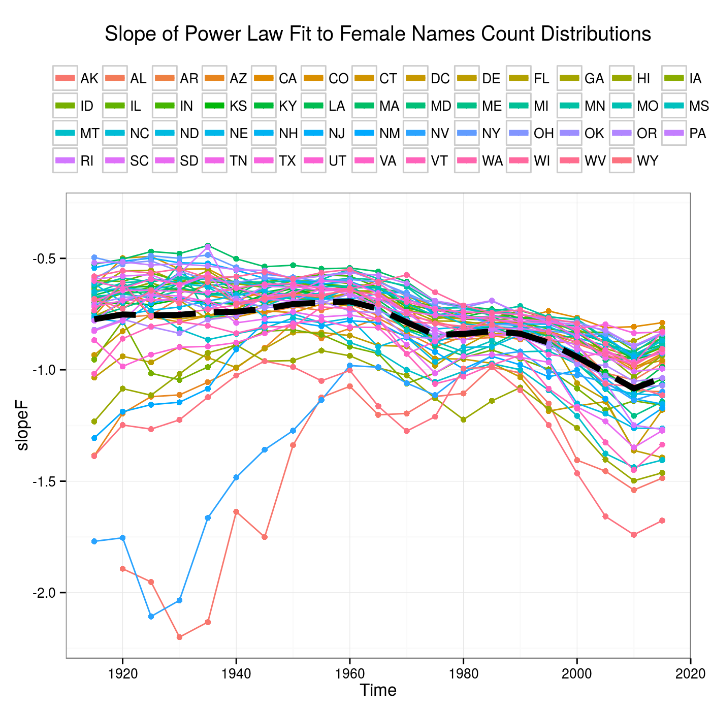
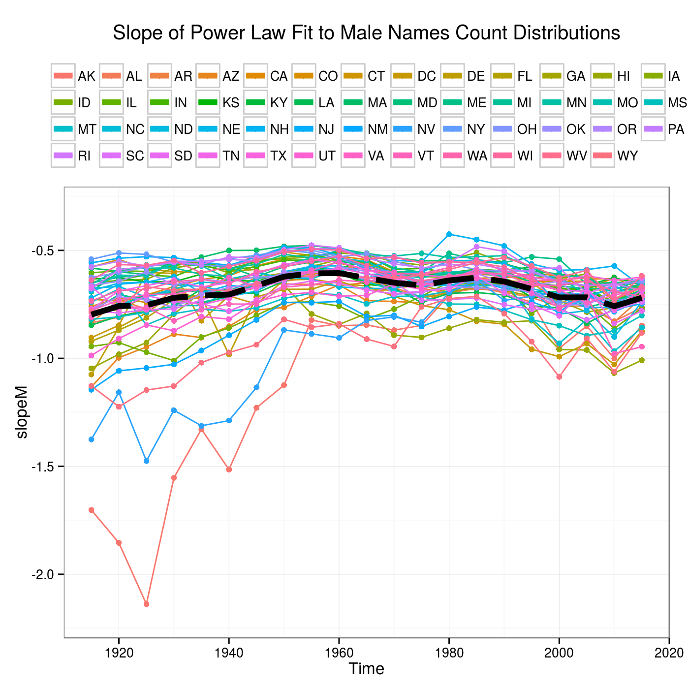
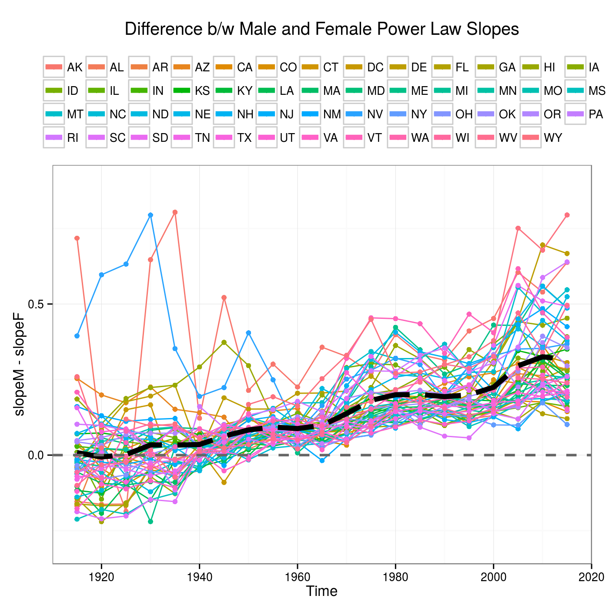

This report is generated from a Rmarkdown document which includes all code to perform data processing, modeling, plotting, etc. (except for functions defined in external scripts, included in the archive). However, for readability only a few bits of code are echoed explicitly in the compiled document. The full straight reproducibility is only limited by the fact that in the interest of simplicity and for computational convenience some parts of the processing have been flagged as inactive (eval = FALSE), and in its current form some data are instead loaded from previously saved work, namely the model fitting. That said, the document includes the code to perform the entire analysis, and a few changes would allow to do so by compiling it.
states_codes <- list.files("./data/", pattern = "*.TXT") %>% gsub("\\.TXT", "", ., perl = TRUE)
data_dir <- "data"
df <- do.call(bind_rows, lapply( list.files(data_dir, pattern = "[A-Z][A-Z].TXT.gz", full.names = TRUE),
function(x) { read.csv(x, header = FALSE, stringsAsFactors = FALSE) }) )
colnames(df) <- c("state", "gender", "year", "name", "count")For illustration, we show here the head of one of the state files (Alaska), showing the structure of the data as distributed.
file.head("data/AK.TXT.gz", n = 10)
# AK,F,1910,Mary,14
# AK,F,1910,Annie,12
# AK,F,1910,Anna,10
# AK,F,1910,Margaret,8
# AK,F,1910,Helen,7
# AK,F,1910,Elsie,6
# AK,F,1910,Lucy,6
# AK,F,1910,Dorothy,5
# AK,F,1911,Mary,12
# AK,F,1911,Margaret,7The data for each state are stored in tall format in a comma separated list. Each row has five values:
A few additional notes:
Entries are grouped (sorted) by gender, then year, and finally in decreasing order of counts. If there are multiple names with the same number of occurrences, they are then sorted alphabetically.
It is important to note that for each state+year subset only names with at least five occurrences are reported in this public data set (out of privacy concerns).
The total number of distinct names in the data set is 29828, and of these 2852 have been used for both females and males.
This is an example of the entries in the data frame where I loaded and combined all the data, a sample of random rows:
df[sample(1:nrow(df), 12), ]
# Source: local data frame [12 x 5]
#
# state gender year name count
# 1 NC F 1979 Georgia 9
# 2 IL M 1996 Zackery 16
# 3 SC F 2007 Emily 256
# 4 IA F 1944 Pearl 7
# 5 MN M 1999 Nathanial 6
# 6 DC F 1922 Marguerite 21
# 7 GA M 1951 Cleve 7
# 8 NY F 2013 Izel 5
# 9 MI M 2001 Kendall 19
# 10 MO M 1948 Doug 12
# 11 RI F 1945 Meredith 18
# 12 CA F 1953 Dolly 20I did not get a chance to explore the data in much detail (and not for lack of interest) and at this stage my main concern, perhaps the only one for now, is about the effect of the cutoff imposed on the release of names with fewer than 5 occurrences in a state.
First off, given the wide range of state populations (about a factor of 50), this threshold at a fixed value effectively introduces a distortion in the data in the sense that \(n\ge5\) truncates the distribution of names at different levels depending on a state population (taken as a proxy for number of births). On the other hand, we are dealing with an inherently discrete quantity and below 5 there are always only four other “levels” 1, 2, 3, 4, no matter how large is a state population. So, it is not clear to me how much is the impact of the cutoff in practice. One pertinent question is how much data would be there, and a good starting point is looking at how the available data are distributed.
As with many things in nature, the distribution of the number of names vs. their frequency follows fairly closely a power law distribution. Here are a couple of examples, for two states, with data added over a 5-year period. Please note that this is a log-log plot, the best way to look at data following a power law distribution, which comes out just like a straight line. Pink symbols show the distribution of female names, blue symbols that for male names. Red and blue dashed lines are the best fit with a linear regression model to the log-log data (points covered by a grey square were exclude from the fit.)
Data were binned, with bin width \(0.25 \log_{10}(5)\), and the plots show the counts in each bin, not a density (i.e. count divided by bin width).

Data are sometimes noisy and bumpy, but overall, for all states and time intervals (provided that these latter were long enough to build up a decent statistic in states with low counts), these distributions are well modeled with steep declining power laws, possibly with an exponential cutoff at high counts. Assess that vs. simply a drop in statistics would require more careful analysis.
The slope of the power law is around \(-1\) (it would \(-2\) for density), and if extrapolated back below the cutoff at 5 counts it would translate into a large number of names with low-count, as much as 10 times more than the names accounted for.
One way of checking at a large scale level if this could indeed be the case, could be do compare the total counts of birth accounted for by these data with more comprehensive census of birth by state and year. Unfortunately I did not get a chance to pursue this avenue.
Frankly I was surprised to see that the certainly expected power law continued apparently undeterred until the lowest count limit. My naive expectation was that before that point it would begin to taper off and eventually drop, though perhaps below the 5-count limit. I can’t help but wonder how realistic/reasonable it is to imagine that there could be several thousands of “hidden” names caught by the \(n\ge5\) filter.
How many babies are given names that is unique to them (in a state and year)?!
For a little more information, here is the Table of Top 10 rankings, left to right, irrespective of gender, female-given names, male-given names.
# Source: local data frame [10 x 6]
#
# AnyGender N_any Female N_female Male N_male
# 1 James 4942431 Mary 3728041 James 4924235
# 2 John 4834422 Patricia 1567405 John 4818746
# 3 Robert 4718787 Elizabeth 1490772 Robert 4703680
# 4 Michael 4297230 Jennifer 1460272 Michael 4280040
# 5 William 3822209 Linda 1445838 William 3811998
# 6 Mary 3737679 Barbara 1422631 David 3541625
# 7 David 3549801 Margaret 1120006 Richard 2526927
# 8 Richard 2531924 Susan 1107916 Joseph 2467298
# 9 Joseph 2472917 Dorothy 1051262 Charles 2237170
# 10 Charles 2244693 Jessica 1036257 Thomas 2209169First, how many names were used for both female and male babies in 2013?
494, a relatively small fraction of the set of 2852 names that “historically” have been used for both females and males.
With the data ready, we can answer the question in a few different ways.
One option would be to select names for which the counts for female and male are identical, \(\Delta=0\), and among these pick the name with the highest count. This approach penalizes popular names given the increasingly smaller likelihood that the number of occurrences in females and males match.
| Name | N_female | N_male | N_tot | diff | diff_norm | ratio | |
|---|---|---|---|---|---|---|---|
| 1 | Nikita | 47 | 47 | 94 | 0 | 0 | 1 |
| 2 | Aris | 15 | 15 | 30 | 0 | 0 | 1 |
| 3 | Cree | 11 | 11 | 22 | 0 | 0 | 1 |
| 4 | Tru | 11 | 11 | 22 | 0 | 0 | 1 |
| 5 | Devine | 10 | 10 | 20 | 0 | 0 | 1 |
To mitigate this effect, on account of the fact that we would like to pick a name that is in some way popular, we could normalize the difference in male-female counts by the total counts (equivalent to using the \(\min(F/M, M/F)\)). Names with a \(\Delta=0\) would still come up at the top, hence we exclude them in this case, pending a check of whether or not they would have ranked higher than the top name resulting from this second method.
| Name | N_female | N_male | N_tot | diff | diff_norm | ratio | |
|---|---|---|---|---|---|---|---|
| 1 | Jael | 123 | 130 | 253 | 7 | 0.0277 | 0.9462 |
| 2 | Milan | 422 | 450 | 872 | 28 | 0.0321 | 0.9378 |
| 3 | Aven | 81 | 87 | 168 | 6 | 0.0357 | 0.9310 |
| 4 | Reilly | 59 | 54 | 113 | 5 | 0.0442 | 0.9153 |
| 5 | Lennon | 224 | 249 | 473 | 25 | 0.0529 | 0.8996 |
To open up more the “name space” towards generally more common, hence more interesting, names we need allow for a range in the normalized difference or equivalently the count ratio.
If we include names with \(min(F/M, M/F) > 0.8\), we get this new list:
| Name | N_female | N_male | N_tot | diff | diff_norm | ratio | |
|---|---|---|---|---|---|---|---|
| 1 | Charlie | 1297 | 1531 | 2828 | 234 | 0.0827 | 0.8472 |
| 2 | Dakota | 1049 | 865 | 1914 | 184 | 0.0961 | 0.8246 |
| 3 | Justice | 669 | 543 | 1212 | 126 | 0.1040 | 0.8117 |
| 4 | Milan | 422 | 450 | 872 | 28 | 0.0321 | 0.9378 |
| 5 | Lennon | 224 | 249 | 473 | 25 | 0.0529 | 0.8996 |
This plot summarizes the analysis.
We skip the two less smart approaches and show directly the results from Approach 3, with table and figure.
The total number of bisex names for 1945 is 237.
| Name | N_female | N_male | N_tot | diff | diff_norm | ratio | |
|---|---|---|---|---|---|---|---|
| 1 | Leslie | 1678 | 1977 | 3655 | 299 | 0.0818 | 0.8488 |
| 2 | Jackie | 1245 | 1473 | 2718 | 228 | 0.0839 | 0.8452 |
| 3 | Jessie | 1072 | 910 | 1982 | 162 | 0.0817 | 0.8489 |
| 4 | Frankie | 482 | 549 | 1031 | 67 | 0.0650 | 0.8780 |
| 5 | Lavern | 70 | 74 | 144 | 4 | 0.0278 | 0.9459 |

For this question we aggregate all the data nationally, summing all occurrences of each name over all states. However, we want to keep track separately of the female and male counts for bisex names, and for simplicity we append a _F or _M to the name itself for the instances where it is used for female or male.
After aggregation, the 1980 and 2013 data sets comprise 6185 and 10004 names, respectively, of which 3372 are in common.
Taking the straightforward approach of defining percentage increase as the ratio between the difference 2013 and 1980 counts over the 1980 counts, i.e. \((n_{2013} - n_{1980})/n_{1980}\), these are the names whose adoption increased the most between those two reference years:
| name | gender | n1980 | n2013 | change_pct | |
|---|---|---|---|---|---|
| 1 | Avery | F | 5 | 9121 | 182320 |
| 2 | Colton | M | 5 | 6439 | 128680 |
| 3 | Aria | F | 5 | 5085 | 101600 |
| 4 | Isabella | F | 23 | 17490 | 75943 |
| 5 | Mila | F | 5 | 3661 | 73120 |
The majority of them barely made into the 1980 dataset because they total count is 5, meaning that they entered this data set only in one state for that year (there are 238 names with a count of only 5 in 1980 for the 1980-2013 common data set, 206 in 2013).
For the largest decrease we do the same calculation and obtain the 5 worst performers shown in the following table. To allow a more direct comparison with the changes reported for the increases, we added to this table a column with the percentage change computed with 2013 as baseline (“rev_pct”).
| name | gender | n1980 | n2013 | change_pct | rev_pct | |
|---|---|---|---|---|---|---|
| 1 | Misty | F | 5534 | 12 | -99.78 | 46017 |
| 2 | Jill | F | 4553 | 13 | -99.71 | 34923 |
| 3 | Rhonda | F | 1515 | 5 | -99.67 | 30200 |
| 4 | Shawna | F | 1420 | 5 | -99.65 | 28300 |
| 5 | Tracey | F | 1237 | 5 | -99.60 | 24640 |
Again, not surprisingly, several of the most forgotten names show up right at the minimum possible number of occurrences to enter the data set.
NOTE on gender and dramatic changes: it is interesting, though at this level little more than anedoctal, that the majority of the names that exhibit the most dramatic changes are female names: they comprise 60% of the 20 largest (measurable) increases and 95% of the 20 largest (measurable) decrease (60% and 84% of the top 50 increase/decreases).
There may be names that enjoyed (suffered) an even larger increase (decrease) in popularity in the 2-point comparison between 1980 and 2013 and not appear in the preceding analyses because they were below threshold for inclusion in the data set in either 1980 or 2013.
Names present in 2013 but not in 1980 could have in principle jumped up more than the 182320% of Avery. The largest increase one of these names could have experienced is if they started with a count of 1 in 1980.
Of course, in principle some of the names recorded only in 2013 could truly not have “existed” in 1980, thus earning an “infinite” increase. However, we can quite handle properly the possibility that a 2013 name was not actually given to anybody in 1980 because we are blind to what “happened” below the 5-count threshold. Therefore we restrict our estimate to the scenario whereby we assign to every name a count equal to 1 for the epochs for which it is not present.
Viceversa, names present in 1980 but not in 2013, could have dropped more than 46016.7% of Misty and gone under threshold.
Assigning, as noted, a count = 1 for 1980 to names existing in 2013 and not in 1980, we compute their hypothetical percentage increase from 1 to their actual 2013 count.
| name | gender | n2013 | change_if_1 | |
|---|---|---|---|---|
| 1 | Jayden | M | 14656 | 1465500 |
| 2 | Aiden | M | 13527 | 1352600 |
| 3 | Madison | F | 10529 | 1052800 |
| 4 | Harper | F | 8222 | 822100 |
| 5 | Addison | F | 7677 | 767600 |
| name | gender | n1980 | rev_change_if_1 | |
|---|---|---|---|---|
| 1 | Tonya | F | 3073 | 307200 |
| 2 | Beth | F | 2843 | 284200 |
| 3 | Kristi | F | 2521 | 252000 |
| 4 | Latoya | F | 2479 | 247800 |
| 5 | Kelli | F | 2477 | 247600 |
NOTE: if we wanted to split hairs and be excruciatingly obsessive in estimating the largest potential increase, we could add to the total count for a name a “free \(+4\) contribution” for any state for which it does not appear in the data. That would be the maximum extra number of occurrences not accounted for. Viceversa for pushing the estimate for largest decrease we could add \(4\) free counts for each state where a name does not appear in 1980.
With a little R magic it would not be difficult but it is beyond the scope of this report. Moreover, considering that in the most extreme scenario of a name appearing for only one state, this would add \(200\) counts, it looks like it would not change substantially the rankings presented above.
This dataset is extremely interesting and could the source of endless stimulating exploration, but I will have to leave that for another time. In the remainder of this report I will present some basic plots I have made as I was playing with the data.
First a few terse thoughts about ideas that crossed my mind while working with these data, not much more than bullet points at this stage, and not a particularly deeply thought-through order:
Sociological/cultural influences on popular names?
Right after WW2, or so it seems, female names’ variety started to grow while the used pool of male names remained fairly stable until the end of the 1960’s.
After that point male names have expanded but it does not look like the can catch up. Please note that the Y-axis scale is logarithmic, hence constant spacing means constant ratio (instead of constant difference).

Total number of births as counted from this dataset. These would be the figures to compare with accurate data about birthrates, to investigate the effect of the low-count threshold for inclusion in the data.
The fact that the total counts for female and male births are systematically offset from each other by an amount that would seem hard to explain with natural causes, may be related to the presence of the threshold. The count distributions for female names are steeper than those for males, quite systematically independently of the state and by a larger degree in more recent decades. Steeper power law distributions, if they continue to lower counts below the threshold would resuls in a larger loss of data for female names and male names. This in turn would bias the cumulative counts by gender.

How far do popular names stretch?
How many distinct names are necessary to cover a given fraction of the new babies?
The curves in the following figure shows the fraction of the distinct names needed to cumulatively cover 90, 95, 99% of the new babies, as a function of time. The lines were largely flat or even decreasing until the 1950’s, when the highest percentile line started a long term upward trend. All percentiles unambiguously started an increasing trend at the beginning of the 1990’s.
At first glance I don’t see a reason why this trend could caused by population growth given that these lines represent the fraction of names given in a year, a relative measure. If population growth leads to the more names, as perhaps suggested by one of the previous figures, this by itself as a mass effect would not automatically cause a shift in the percentile lines.
My impression is that the trends reflect an increasing spreading of the tails of the distribution, with their cores able to account a decreasing portion of the population.
The spreading could be due to increased creativity, less

I already shared some thoughts about the count distributions, and here I would like to focus on the results of fitting them with power laws, allowing for the effect of gender.
First a few more examples of the count distributions. They are all for the period 2009-2013, for eight states in different regions and of different size. In all of them the female name counts distributions are steeper than the male’s. Because broadly speaking their total integral should be approximately similar, their different slopes mean that they will cross-over, and so there are many more names with high-count among male names, and many more names with low-count among female names.
We noted above that the steeper slope of the female names distribution combined with the low-count threshold may have something to do with the offset between total number of female and male births counted from these data.
In a few of these plots there is a hint of a possible “knee” in the distribution of male names, between the power law part (left / lower counts side).

We split the data by state, decade and gender, binned them up and fit a linear regression model (lm()) to each name count distribution. Please note that the “decades” are actually partially overlapping, in the sense that we used a 10-year wide sliding window, moving it in steps of 5 years. So, consecutive data/models are not fully independent as they overlap for half of the time intervals.
The next three plots show the values of the slope of the female names distributions, the slope of the male names distributions and they difference. Points for each state are connected over time.
The thick long-dashed grey line connects the mean values at each time value.
The main observations from these figures are that:



sessionInfo()
# R version 3.1.3 (2015-03-09)
# Platform: x86_64-pc-linux-gnu (64-bit)
# Running under: Ubuntu 14.04.2 LTS
#
# locale:
# [1] LC_CTYPE=en_US.UTF-8 LC_NUMERIC=C LC_TIME=en_US.UTF-8
# [4] LC_COLLATE=C LC_MONETARY=en_US.UTF-8 LC_MESSAGES=en_US.UTF-8
# [7] LC_PAPER=en_US.UTF-8 LC_NAME=C LC_ADDRESS=C
# [10] LC_TELEPHONE=C LC_MEASUREMENT=en_US.UTF-8 LC_IDENTIFICATION=C
#
# attached base packages:
# [1] stats graphics grDevices utils datasets methods base
#
# other attached packages:
# [1] ggplot2_1.0.1 stringr_1.0.0 magrittr_1.5 tidyr_0.2.0 dplyr_0.4.2 knitr_1.10.5
#
# loaded via a namespace (and not attached):
# [1] DBI_0.3.1 MASS_7.3-41 R6_2.0.1 Rcpp_0.11.6 assertthat_0.1
# [6] colorspace_1.2-6 digest_0.6.8 evaluate_0.7 formatR_1.2 grid_3.1.3
# [11] gtable_0.1.2 highr_0.5 htmltools_0.2.6 labeling_0.3 lazyeval_0.1.10
# [16] munsell_0.4.2 parallel_3.1.3 plyr_1.8.3 proto_0.3-10 reshape2_1.4.1
# [21] rmarkdown_0.7 scales_0.2.4 stringi_0.5-5 tools_3.1.3 yaml_2.1.13